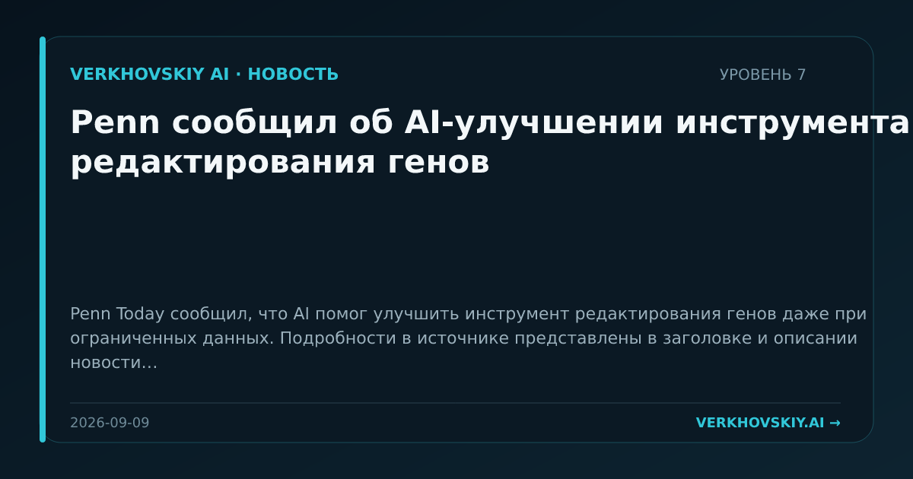

Penn сообщил об AI-улучшении инструмента редактирования генов
Penn Today сообщил, что AI помог улучшить инструмент редактирования генов даже при ограниченных данных. Подробности в источнике представлены в заголовке и описании новости. Почему это важно: Ограниченность данных становится не запретом, а проектным условием для AI в биологии. Это важно для областей, где большие обучающие наборы трудно собрать.